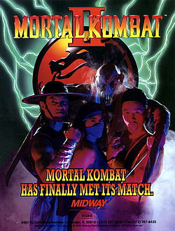
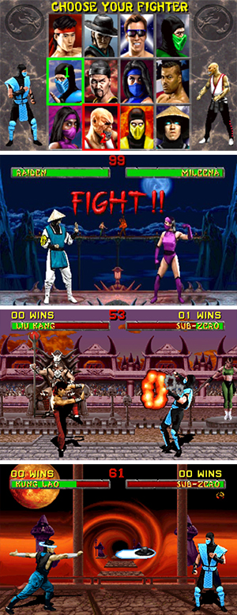

The Second
Mortal Kombat II was the second game in the Mortal Kombat series, improving the gameplay and expanding the mythos of the 1992's original Mortal Kombat, notably introducing multiple and varied Fatalities and several iconic characters, such as Kitana, Kung Lao, Mileena and the series' recurring villain, Shao Kahn. The game's plot continues on from the first part, featuring the next Mortal Kombat tournament being set in the otherdimensional realm of Outworld, with the Outworld and Earthrealm representatives fighting each other on the way to the evil emperor of Outworld, Shao Kahn.
The game was an unprecedented commercial success and was generally acclaimed by critics, including receiving many annual awards and being featured in various top lists in the years to come, but also sparked a major video game controversy due to its over-the-top violent content. Its legacy include a spin-off game Mortal Kombat: Shaolin Monks and having the greatest influence on the 2011 reboot game Mortal Kombat, as well as inspiring numerous video game clones.
Gameplay
The gameplay system of Mortal Kombat II is an improved version of that from the original Mortal Kombat. There are several changes in standard moves: a crouching punch and turnaround kick were added, low and high kicks became differentiated (be it crouching or standing up), the roundhouse kick was made more powerful (knocking an opponent across the screen, similarity to the game's uppercut), and it is easier to perform a combo due to reduced recovery times for attacks. Returning characters also gained new special moves, including some in-air, and the game plays almost twice as fast as the original. However, all characters in the game still share generic attributes (such as speed, power and jump height) and all normal moves are also the same between each character.
As with its predecessor, matches are divided into rounds, and the first player to win two rounds by fully depleting their opponent's life bar is the winner; at this point the losing character will become dazed and the winner is given the opportunity of using a finishing move. Mortal Kombat II drops the "test your might" bonus games and point system from the first game, in favor of a consecutive win tally where wins are represented by icons.
The game marked introduction of multiple Fatalities (post-match animations of the victorious characters executing their defeated foes) as well as additional, non-lethal finishing moves to the franchise: Babalities (turning the opponent into a crying baby), Friendships (a non-malicious interaction, such as dancing or giving a gift to the defeated opponent) and additional stage-specific Fatalities (the winner uppercutting his or her opponent into an abyss below, spikes in the ceiling, or a pool of acid in the background). Finishing moves, however, can not be performed against the defeated bosses and secret characters who do not have finishing moves.
Storyline
"500 years ago, Shang Tsung was banished to the Earth Realm. With the aid of Goro he was to unbalance the furies and doom the planet to a chaotic existence. By seizing control of the shaolin tournament he tried to tip the scales of order towards chaos. Only seven warriors survived the battles and Shang Tsung's scheme would come to a violent end at the hands of Liu Kang. Facing execution for his failure and the apparent death of Goro, Tsung convinces Shao Kahn to grant him a second chance... Shang Tsung's new plan is to lure his enemies to compete in the Outworld where they will meet certain death by Shao Kahn himself. Now, the Kombat kontinues..."
The Plot
Following his defeat, Shang Tsung begs his master, Shao Kahn, to spare his life. He tells Shao Kahn that the invitation for Mortal Kombat cannot be turned down, and if they hold it in Outworld, the Earthrealm warriors must attend. Kahn agrees to this plan, and restores Tsung's youth. He extends the invitation to Raiden, who gathers his warriors and takes them into Outworld. The tournament is dangerous, as Shao Kahn has the home field advantage, and an Outworld victory will unbalance the furies and allow Outworld to subsume Earthrealm.
Characters


Secret Fight: Smoke
To reach Smoke, you must fight a match on the Portal stage. This can be done during a one or two player game. As the match progresses, keep your eyes open for MKII's Sound Designer, Dan Forden. He'll make a brief appearance in the lower-right corner of the screen and will say "Toasty". While Dan's face is on the screen, hold Down and press Start. If you did it correctly you will be transported to Goro's Lair to fight Smoke.
Smoke occasionally drops down during a match and gives clues on how to reach him. Here is a list of everything that he says:
- I am called Smoke
- Toasty
- You can Start finding me
- Ermac who?
- You can not defeat me
- I am one of three
- Portal
- I will meet you in Goro's lair
- Mortal Kombat One
- Prove yourself
Secret Fight:Jade
In the match before the "?" sign, win a round using only Low Kick and you'll fight against Jade.
Secret Fight:Noob Saibot
To play against him, you must win 50 wins in a row. (25 on Sega Genesis)
General Info
Platforms
Arcade, Super Nintendo, Sega Genesis, Sega Saturn, Sega Master System, Sega 32X, Amiga, Game Gear, PlayStation, PC, Game Boy.
Also available on PlayStation 2, GameCube and X-Box as part of Midway Arcade Treasures 2, PSP as part of Midway Arcade Treasures: Extended Play, and PC as part of Midway Arcade Treasures: Deluxe Edition.
Release Dates:
- Arcade: 1993
- Super Nintendo: September 9th, 1994
- Sega Genesis: 1994
- Sega Saturn: March 28th, 1996
- Sega Master System: n/a
- Sega 32X: 1994
- Amiga: 1994
- Game Gear: September 9th, 1994
- PlayStation: August 2nd, 1996
- PC: 1994
- Game Boy: October 27th, 1994
Playable Kombatants:
(Hidden Kombatants not included)
Arcade, Super Nintendo, PC, Sega Genesis, PlayStation: 12: See select screen.
Game Boy: 8.
Hidden Kombatants (Non-Playable):
Arcade: Jade, Smoke, Noob Saibot.
Bosses:
Sub-Sub-Boss: Shang Tsung.
Sub-Boss: Kintaro.
Boss: Shao Kahn.
Read full article on wikipedia